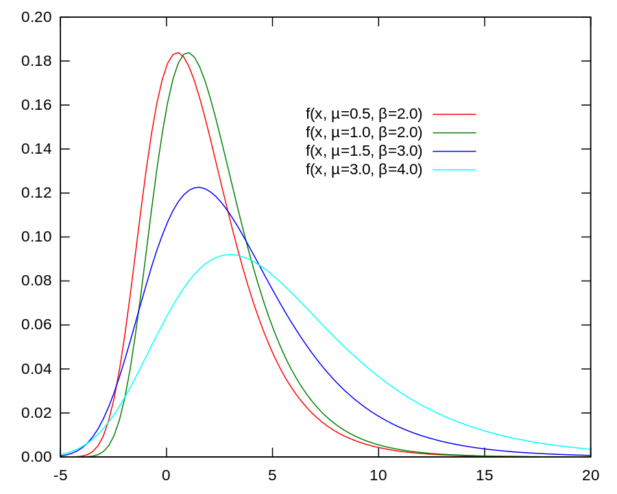
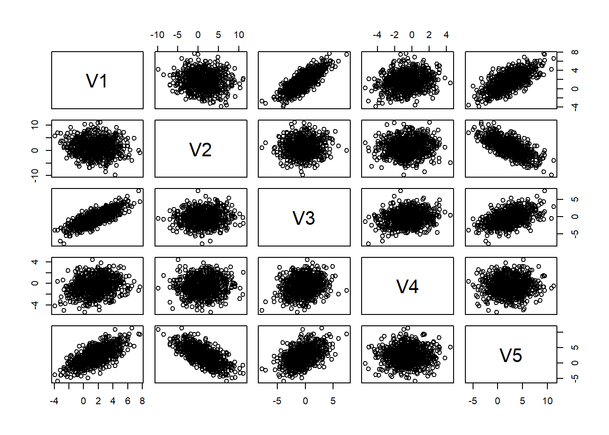

The wonderful Jim Savage calls the MaxDiff model of discrete choice a “mathematically incorrect model of a psychologically incoherent concept”1.
Despite this lovely dunk, and some wonderful notes explaining why MaxDiff’s not great, the model remains frequently used in market research, most prominently as implemented in Sawtooth. Why is this?
Putting aside the most obvious answers like inertia and a dim view of statistical practice in marketing, it’s surprisingly hard to find a fully fleshed out explanation of the alternatives online. In this post, I remedy that, with sections for:
Introducing MaxDiff and its blemishes
Showing how the issues propagate into final model quality
Alternatives- Rank-Ordered Logits with ties, and connected choice graphs
Introducing MaxDiff
If you’re reading this post, you likely have some familiarity with the basics of discrete choice models, but here’s a brief refresher2.
We want to build a model of how real people respond to the request to make decisions among discrete options. This could be:
A pollster asking which candidate(s) or political parties each respondent favors
A marketing firm studying preferences amongst a variety of chocolate bars
A political scientist asking which message voters find most convincing
One reasonable model3 for this is to say that individual i making choices among j options can be inferred to have some underlying utility \mu from the available choices, and that while they usually choose their most preferred option according to their utility function, there is some degree of randomness. The basic model is then
\mu_{ij} = \mu_{ij} + \epsilon_{ij}
, where the \mu_{ij} can have rich provenance (demographics and other individual traits, the context in which the decision is made, the other options available…) but is fixed, but there’s some \epsilon_{ij} of randomness involved. To make this model easier to estimate, we assume that \epsilon_{ij} has a Gumbel4 distribution.
Under this model, the probability that individual i chooses alternative j from a choice set C_i is:
P_{ij} = \frac{\exp(\mu_{ij})}{\sum_{k \in C_i} \exp(\mu_{ik})}
This is the standard multinomial logit.
Now, suppose we have a dataset where each individual i has made a choice y_i from their choice set C_i. The likelihood of observing this dataset under the multinomial logit model is:
L = \prod_i P_{iy_i} = \prod_i \frac{\exp(\mu_{iy_i})}{\sum_{k \in C_i} \exp(\mu_{ik})}
The likelihood is the product of the choice probabilities for each individual’s observed choice y_i. We can estimate the parameters of the utility function \mu_{ij} by maximizing this likelihood function (or, more commonly, the log-likelihood). This is how the single best choice data is naturally incorporated into the likelihood function. Each observation contributes a term to the likelihood based on the probability of the chosen “best” alternative under the model.
While we can (and will) push the basic logit model of this further to include respondent and choice level covariates, multilevel components, and other improvements, let’s think about the pressures of gathering data here for a moment, since that’ll motivate the desire for something like MaxDiff.
To estimate this, we gather respondents and ask them to choose their favorite option amongst a given choice set. As a way to control the difficulty of making a choice while still gathering enough data, we can limit the size of the set (choose the best of 10 items, instead of 20), and repeat the choice task.
Getting respondents and getting them to stick through a bunch of choice tasks is hard though, and it’s only natural to wonder: can we extract more with each choice set? One option would be to ask the respondents to rank ALL the options at once, but if you have a large choice set that sounds exhausting.
What if we asked people to choose their best and worst choices each time? After all, people might not have strong preferences amongst the middling 18 chocolate bars, but the best and worst seem more memorable, and that’s only 1 more choice.
And now, (stepping into the MaxDiff trap to show its allure, if you will), what if we don’t want to entirely change up our likelihood to handle the new rich source of data? What if handling ties sounds awful? Instead, what if we just treat the worsts as the opposite of the bests, which makes a sort of sense, and simplifies the likelihood one hell of a lot:
Under this assumption, the probability of individual i choosing alternative j as the worst is:
P_{ij}^W = \frac{\exp(-\mu_{ij})}{\sum_{k \in C_i} \exp(-\mu_{ik})}
… Now we’ve stepped in it, and Jimmy is mad at us.
Psycologically Incoherent
What I’ve introduced is the core of the MaxDiff formulation of discrete choice, before bells and whistles are introduced. This has some deep problems though; let’s start with the “psychological” ones. Human decisionmaking is an incredibly complex, not always logical process, and we’ll always be losing significant fidelity in boiling it down into a model. Here though, I’ll focus on explaining a handful of breakdowns in the relationship between reality and the world of our models that are particularly harmful.
First, let’s talk about symmetry. With the MaxDiff likelihood above, we’re treating the worst as equal and opposite to the best. For example, though, I don’t like Joe Biden as much as I dislike Trump5. I really really like the best pizza in Brookyln, but New York pizza is all New York pizza, it only gets so bad. This might be a reasonable simplification in some rare cases, but it’s hard to argue that baking this into our model faithfully mirrors reality.
Also, we’re not only asking them to be symmetric, we’re sort of conjoining the best and worst choice, asking them to share the same utility scale. In other words, the factors that make an alternative more attractive for the best choice are assumed to make it equally less attractive for the worst choice. An easy example is something like health risks- “that sushi place gave me food poisoning” is very relevant to my choice of worst restaurant, but the moment I have to think about food safety, a restaurant isn’t really anywhere relevant on the “best” side of the spectrum for me. Again, you can probably think of a case where this is a fine approximation, but in an ideal world, we won’t force ourselves to weld our notions of best to our notions of worst.
Finally, the error variances being treated as the same should feel pretty strange. I’m much, much more consistent in my selection of “bests” than “worsts”- why would I spent a bunch of time deciding which opinion of 20 is the absolute worst and which is just 19th worst? People tend to be much less consistent, and frankly much less engaged, with their worst choices. Why would we bake this into our model?
Putting this all together, The simplification in estimation that comes with MaxDiff also leaks into how the model “sees” the decision maker, and it meaningfully distorts the map in a way that does not reflect the territory.
Mathmatically Incorrect
Beyond calling the model psychologically incoherent, Savage also says the model is mathematically incorrect. This feels like a slightly stronger insult, and indeed it is, in the sense that the model is failing on its own terms.
How? Well, we’ve explicitly laid out a model with Gumby errors:
Wait, no sorry sorry6. we’ve laid out a model with Gumbel errors \epsilon_{ij}. the PDF is plotted below:

Here’s where the trouble starts: like we discussed above, the MaxDiff model forcibly inserts an element of symmetry into the error distributions of the choices. However, as you probably already noticed, the Gumby Gumbel distribution is not a symmetric distribution! This is fine in the case where we’re just reasoning about the best choice, but even on it’s own terms the MaxDiff formulation doesn’t quite make sense.
The defects are not just theoretical or cosmetic: an illustration
So I’ve shown some ways I claim that the MaxDiff model of discrete choice falls short, but how much do they really matter? As someone with an appreciation for the agnostic perspective on statistical modeling , I think it’s important to not only show that there are theoretical senses in which a model might be flawed, but further prove that these technical blemishes harm model performance on metrics we care about.
To do this, let’s generate some synthetic data, and fit both the best-choice and MaxDiff models to it. For this section, I’ll essentially be starting from Jim Savage’s best choice model here, and then add in the “worst choice as negative best choice” logic afterwards.
Let’s start with the synthetic data:
library(tidyverse)
Warning: package 'tidyverse' was built under R version 4.2.3
Warning: package 'ggplot2' was built under R version 4.2.3
Warning: package 'tibble' was built under R version 4.2.3
Warning: package 'tidyr' was built under R version 4.2.3
Warning: package 'readr' was built under R version 4.2.3
Warning: package 'purrr' was built under R version 4.2.3
Warning: package 'dplyr' was built under R version 4.2.3
Warning: package 'stringr' was built under R version 4.2.3
Warning: package 'forcats' was built under R version 4.2.3
Warning: package 'lubridate' was built under R version 4.2.3
── Attaching core tidyverse packages ──────────────────────── tidyverse 2.0.0 ──
✔ dplyr 1.1.3 ✔ readr 2.1.4
✔ forcats 1.0.0 ✔ stringr 1.5.1
✔ ggplot2 3.4.3 ✔ tibble 3.2.1
✔ lubridate 1.9.2 ✔ tidyr 1.3.1
✔ purrr 1.0.2
── Conflicts ────────────────────────────────────────── tidyverse_conflicts() ──
✖ dplyr::filter() masks stats::filter()
✖ dplyr::lag() masks stats::lag()
ℹ Use the conflicted package (<http://conflicted.r-lib.org/>) to force all conflicts to become errors
options(mc.cores = parallel::detectCores())set.seed(605)# Again, note that this code is just reproducing https://khakieconomics.github.io/2018/12/27/Ranked-random-coefficients-logit.html,# although with a more real-world feeling number of respondents and# and total choices. If this is taking uncomfortably long, feel free to scale# down I, the results should reproduce just fine.# Number of individualsI <-80# Number of tasks per individualTasks <-10# Number of choices per taskJ <-5# Dimension of covariate matrixP <-5# Dimension of demographic matrixP2 <-6# demographic matrixW <-matrix(rnorm(I*P2), I, P2)# Loading matrixGamma <-matrix(rnorm(P*P2), P, P2)# Show W * t(Gamma) to make sure it looks rightW %*%t(Gamma)
# Correlation of decisionmaker random slopesOmega <-cor(matrix(rnorm(P*(P+2)), P+2, P))# Scale of decisionmaker random slopestau <-abs(rnorm(P, 0, .5))# Covariance matrix of decisionmaker random slopesSigma <-diag(tau) %*% Omega %*%diag(tau)# Centers of random slopesbeta <-rnorm(P)# Individual slopesbeta_i <- MASS::mvrnorm(I, beta, Sigma) + W %*%t(Gamma)# Again, quick plot to sanity checkplot(as.data.frame(beta_i))

# Create X -- let's make this a dummy matrixX <-matrix(sample(0:1, Tasks*I*J*P, replace = T), Tasks*I*J, P)# Each of the rows in this matrix correspond to a choice presented to a given individual# in a given taskindexes <-crossing(individual =1:I, task =1:Tasks, option =1:J) %>%mutate(row =1:n())
While this simulation certainly isn’t exactly simple, let me pause to point something out something I’ve not done. I have not made any choices here that are designed to make MaxDiff look poor. Since we want to use a model of realistic complexity, this has simulated structure such that it’ll benefit from the random coefficients formulation I’ll use in a moment. Similarly, this has load-bearing covariates at both the individual and choice level, since we would almost always have those in the real world. But the core utility function we’ve created for respondents boils down to simulating data under the assumptions of the logit choice model we’ve been discussing all along.
Alternative #1: rank-ordered logits with connected graphs of choices
Alternative #2: a backup plan- rank-ordered logits with ties
Stepping Back: the utility of discrete choice more broadly
Footnotes
The smiley face is a threat: it’s there to make sure MaxDiff stays down :-D↩︎
If you want more of an in-depth introduction, here are some resources I’d reccomend. First, Jim Savage’s blog post series is great, and does a fantastic job of explaining how our assumptions about choice making map onto the math. I also benefitted from reading Glasgow’s Interpreting Discrete Choice Models, which builds up the basics of choice models a bit more slowly. Finally, if you want something that goes much more in detail, Kenneth Train’s Discrete Choice Models with Simulation goes into great mathmatical detail about the models.↩︎
I won’t rehash more subtle implications of this basic model here; see the footnote above for references that explore the mind of this Homo Economicus more in depth. Instead, I’ll mostly pull up assumptions as they become relevant for discussing MaxDiff.↩︎
Other options are possible, but less common, and would take us too far afield, so I’ll skip explaining the choice of Gumbel versus other distributions here.↩︎
President Biden is great, it’s just hard to compete with the comically malignant and incompetent by being solid and stabilizing.↩︎
Unlike the blog post about left-handed kangaroos drinking fosters I’m working on, this post was not primarily motivated by the urge to ask DALL-E to create this.↩︎